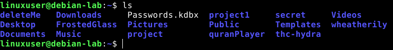

Learn Cybersecurity
in this site i will do like small courses to learn about cybersecurity.
Whether you are a beginner or an expert in this field, I advise you to use one of the Linux distributions, and among the most famous are : Ubuntu, Kali Linux, Debian, and Parrot Security OS.
Today we will begin with the simple system commands, and the first command we have is :
ls
This command is used to list the files and directories in the current directory. It is one of the most basic and frequently used commands in Linux.
for example :
